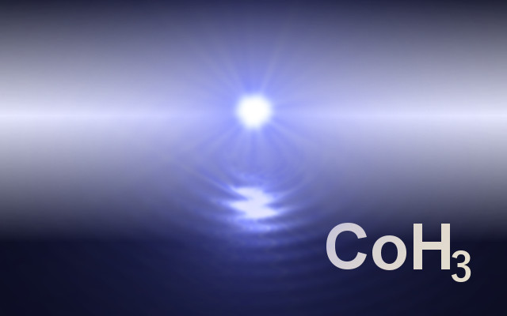

Oct., 2024
Kawano Toshihiko
Los Alamos National Laboratory
This program has been developed as the author's personal product, started in the late 1980s in Japan. There are quite a few collaborators who contributed to improve CoH. I'd like to express my great gratitude for them, although I would not append a long list of my friends here.
Discrete level data under the directory levels are taken from the IAEA (International Atomic Energy Agency) Coordinated Research Project RIPL - Reference Input Parameter Library.
Nuclear mass data given in source/masstable_audi2012_frdm2012.h
includes Audi's 2012 mass table and FRDM2012 masses.
Author : KAWANO Toshihiko
Institute : Theoretical Division, T-2,
Los Alamos National Laboratory
Email : kawano@lanl.gov